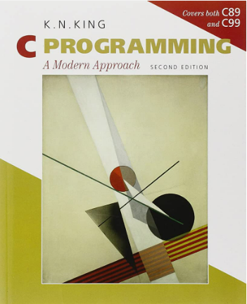
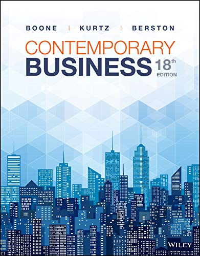

| 
Textbook: C Programming: A Modern Approach Seller: Frederick Jones Email: fdjones@dons.usfca.edu Phone: 834-218-9996 |
Textbook: Financial Accounting: A Business Process Approach, 3rd edition Seller: Jane Doe Email: JaneD@dons.usfca.edu Phone: (510) 606-9098 |
Textbook: Essentials of Modern Business Statistics with Microsoft Excel 8th Edition Seller: Claude Monet Email: Monet@dons.usfca.edu Phone: (495) 958-5144 |
|
Textbook: The Distance Between Us: A Memoir Seller: Diego Velazquez Email: Monet@dons.usfca.edu Phone: (495) 958-5144 |
Textbook: The Upside Down Boy/ El niño de cabeza (Children’s Book Press) Seller: Francisco De Goya Email: Ciscoya@dons.usfca.edu Phone: (495) 958-5132 |
Textbook: Your family, your self. Seller: Jack Poll Email: JPoll@dons.usfca.edu Phone: (445) 968-8133 |
|
Textbook: Flannery O’Connor’s Wise Blood, Publisher: Farrar, Straus and Giroux (January 1, 1990) Seller: Joan Miro Email: Joaro@dons.usfca.edu Phone: (795) 058-5134 |
Textbook: James Baldwin’s Go Tell It On The Mountain, Publisher: Dell (June 15, 1980) Seller: Edward Hong Email: HongEd@dons.usfca.edu Phone: (996) 328-5135 |
Textbook: Philip Roth’s American Pastoral, Publisher: Vintage (February 3, 1998) Seller: Ramiro Diaz Email: MiroDia@dons.usfca.edu Phone: (495) 958-5136 |
| 
Textbook: Contemporary Business (18th Edition) Seller: Camille Brown Email: BrownMill@dons.usfca.edu Phone: (495) 958-5137 |